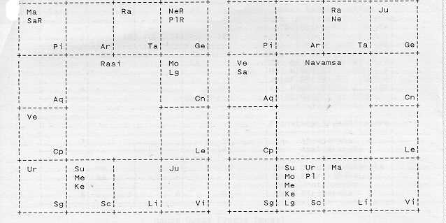

by
The life, however brief, of Franz Bardon, the Magician intrigues the layman, puzzles astrologers, and creates jealousy amongst occultists. Frabato, Franz' stage name, is probably best remembered for his mysterious and magical demonstrations which went beyond the use of mirrors and crystal balls. Frabato could transmit and receive clairvoyant messages against anything reflective such as the liquid of a cup of coffee. Wherever Frabato would go, acquaintances and fans would come easily; many of these envied him to the point of hating him. Why would a man with so many powers not be swayed to the dark side for material gain or for self-gratification as the offers were many?
Frabato had been serving God and Divine Providence as an initiate for dozens of lifetimes. At the age of fourteen his body became an earthly incarnation in order to become his father's spiritual teacher. One's astrological Fifth House signifies poorvapunya or past life credits, one's morals, spiritual techniques, religious-mindedness, and wisdom amongst other higher purposes. Frabato's labour from previous incarnations earned him this powerful Fifth House. We find the Sun, Ketu, and Mercury in this life's purposeful house.
Ketu, in its sign of exaltation, or in Scorpio in this case, and in the Fifth House turned the Magician's focus heavenly and to religious and spiritual practices such as chanting mantras and meditating as part of the initiate training of the spiritual science called Hermetics. He was always available to help the sick, prioritizing his time with the most needy, thus being an example of Fifth House charitable-mindedness. This spiritual science of Hermetics, embodied many healing practices including the use of herbs and plants, and the harnessing of the elemental powers of fire, air, water, and earth. Such talents are manifested by this auspicious placement of the South Node in the Fifth House.
Mercury, in his Fifth House, contributed to Frabato's intelligence, discriminating, and objective approach to communicating his knowledge as an educator and advisor. A strong Fifth House brings one many disciples and students. Many of these students in Hermetics considered Frabato as their great guru. The Magician considered his earthly life to be a spiritual mission; his task was that of disseminating the meaning of the first four and a half pages from the Book of Wisdom, which was passed down to him by a most high member of the Brothers of Light, an organization that has no residence on earth. Some of these pages are similar to the first three Tarot cards. Mercury, in this house of past life talents also bestows the talents of performing hypnosis and of casting spells to the native.
We have looked at the Fifth and First Houses and now we look to the Ninth House, all of which are active dharma houses emphasizing that Frabato's life focused mainly on a form of duty or destiny at fulfilling the tasks in this life as they have been prescribed. In this Ninth House of higher knowledge, philosophy, long journeys, gurus, and more, we find two malefic planets, namely, Saturn and Mars which can mar many of the attributes of this house of fortune. As fate would have it, these two malefics receive an auspicious aspect of Jupiter coming from the Third House mitigating some of the damage. Mars, with this Jupiterian influence, still gives ambition, success, and a pioneering approach to a religion or to a philosophy. This Martian placement promoted Frabato's problems with elders and gurus who wanted him to adopt their philosophical dogmas. Long distance travel was abundant, although many times it was to flee the authorities, or filled with persecution, and one such journey eventually ended in imprisonment. Saturn, in the Ninth House, destroys luck, however, with the aspect of Jupiter, interest in spiritual undertakings and of higher knowledge is maintained.
Jupiter, in the Third House representing the performing arts, communication,
directing, and organizing, fulfilled many of the necessary skills which Frabato
used to both make a living and to live out his holy mission. Frabato produced
and successfully executed his stage demonstrations, was a hospital director, and
then eventually turned inward towards a more quiet life of writing and
publishing his books and magazine articles that made available these spiritual
sciences to the masses. After completing these tasks, Frabato was given the
choice to dissolve himself and to relinquish his individuality which he must
have done in 1958, because, while in jail in Czechoslovakia, he mysteriously
passed away.
Books by Franz Bardon to read include: Frabato the Magician,
Initiation Into Hermetics, The Practice of Magical Evocation, and The Keys to
the True Kabbalah.
December 1, 1909 at 8:15:00 PM CET (-1.00)
Troppau, Czech. -- Long:
017E54' 00'' Lat: 49N56' 00''

| Planets | Rasi | Navamsa | Vel | Nakshatra | Lord/Sub | Pada |
| Lagna | 14Cn57 | Sc | / | 08 Pushya | Sa/Ju | 4 Ma |
| Sun | 16Sc23 (N) | Sc | 1,03 | 17 Anuradha | Sa/Ju | 4 Ma |
| Monn | 13Cn23 (OH) | Sc | 0,98 | 08 Pushya | Sa/Ra | 4 Ma |
| Mars | 11Pi14 (N) | Li | 0,74 | 26 U. Bhadra | Sa/Mo | 3 Ve |
| Mercury | 15Sc34 (E) | Sc | 0,38 | 17 Anuradha | Sa/Ju | 4 Ma |
| Jupiter | !6Vi59 (N) | Ge | 1,86 | 13 Hasta | Mo/Sa | 3 Me |
| Venus | 03Cp38 (GF) | Aq | 0,64 | 21 Uttarashadha | Su/Sa | 3 Sa |
| Saturn | 24Pi05R (E) | Aq | -0,97 | 27 Revati | Me/Ma | 3 Sa |
| Rahu | 14Ta51 (EX) | Ta | -0,04 | 04 Rohini | Mo/Ju | 2 Ve |
| Ketu | 14Sc51 (Ex) | Sc | -0,04 | 17 Anuradha | Sa/Ra | 4 Ma |
Lahiri Ayanamsa = -22D 35M 39S
Midheaven = 25Pi28
| Planets | 1 | 2 | 3 | 4 | 5 | 6 | 7 | 8 | 9 | 10 | 11 | 12 |
| Sun | 50 | 25* | 0 | 0- | Su | 0 | 25 | 75 | 50 | 0+ | 10 | 75 |
| Moon | Mo* | 0 | 25 | 75 | 50- | 0 | 100 | 75 | 50 | 25 | 0+ | 0 |
| Mars | 50- | 0 | 100 | 100 | 50* | 25 | 0+ | 0 | Ma | 0* | 25 | 100 |
| Mercury | 50 | 25 | 0* | 0 | Me | 0 | 25 | 75 | 50- | 0 | 100 | 75* |
| Jupiter | 0+ | 0 | Ju | 0 | 25 | 75* | 100- | 0 | 100* | 75 | 100 | 25 |
| Venus | 100 | 75 | 50- | 25* | 0 | 0 | Ve | 0 | 25+ | 75 | 50* | 0 |
| Saturn | 50 | 0 | 100 | 75+ | 50 | 100 | 0* | 0* | Sa | 0- | 100 | 75 |
| Nodes | / | / | / | / | Ke | / | / | / | / | / | Ra | / |
| / | Su | Mo | Ma | Me | Ju | Ve | Sa |
| Su | / | N | N | E | GF | N | GE |
| Mo | N | / | E | N | F | E | E |
| Ma | N | N | / | GE | N | F | E |
| Me | N | GE | E | / | F | GF | E |
| Ju | GF | GF | N | N | / | GE | E |
| Ve | N | GE | F | GF | E | / | GF |
| Sa | GE | GE | GE | N | E | GF | / |
| Sa | Atmakaraka |
| Ju | Amatyakaraka |
| Su | Bhratrikaraka |
| Me | Matriputrakaraka |
| Mo | Pitrikaraka |
| Ma | Jnatikaraka |
| Ve | Strikaraka |
(Vedic Equal)
| HS | Cusp | Nakshatra | Lord/Sub | Pada |
| 1 | 14Cn57 | 08 Pushya | Sa/Ju | 4 Ma |
| 2 | 14Le57 | 11 P.Phalguni | Ve/Ve | 1 Su |
| 3 | 14Vi57 | 13 Hasta | Mo/Ju | 2 Ve |
| 4 | 14Li57 | 15 Swati | Ra/Ke | 3 Sa |
| 5 | 14Sc57 | 17 Anuradha | Sa/Ju | 4 Ma |
| 6 | 14Sg57 | 20 P. Shadah | Ve/Ve | 1 Su |
| 7 | 14Cp57 | 22 Shravana | Mo/Ju | 2 Ve |
| 8 | 14Aq57 | 24 Shatabhishak | Ra/Ke | 3 Sa |
| 9 | 14Pi57 | 26 U.Bhadra | Sa/Ju | 4 Ma |
| 10 | 14Ar57 | 02 Bharani | Ve/Ve | 1 Su |
| 11 | 14Ta57 | 04 Rohini | Mo/Ju | 2 Ve |
| 12 | 14Ge57 | 06 Ardra | Ra/Ke | 3 Sa |
| PL | Loc | Rules | / | Rasi | / | Bhava | / | / | / | / |
| Su | 5 Sc | 2 | / | Fixed | Water | Succedent | Dharma | / | Trikona | |
| Mo | 1 Cn | 1 | / | Cardinal | Water | Angular | Dharma | Apachaya | Trikona | |
| Ma | 9 Pi | 5 | 10 | Mutable | Water | Cadent | Dharma | / | Trikona | |
| Me | 5 Sc | 3 | 12 | Fixed | Water | Succedent | Dharma | / | Trikona | |
| Ju | 3 Vi | 6 | 9 | Mutable | Earth | Cadent | Kama | Upachaya | / | |
| Ve | 7 Cp | 4 | 11 | Cardinal | Earth | Angular | Kama | Apachaya | / | |
| Sa | 9 Pi | 7 | 8 | Mutable | Water | Cadent | Dharma | / | Trikona | |
| Ra | 11 Ta | / | / | Fixed | Earth | Succedent | Kama | Upachaya | / | |
| Ke | 5 Sc | / | / | Fixed | Water | Succedent | Dharma | v | Trikona | |
| Lg | 1 Cn | / | / | Cardinal | Water | / | / | / | / |
Calendar Day: Wednesday, Astrological Day: Wednesday
Sunrise
07:26:07 Am, Sunset 03:48:16 PM
Tithi: Krishna Panchami
Karana:
Taitila, Yoga: Brahma
Moon is 68% full, Waning
| 1 | 2 | 3 | 4 | 5 | 6 | 7 | 8 | 9 | 10 | 11 | 12 |
| 1 | 5 | 7 | 9 | 9 | 3 | 9 | 7 | 5 | |||
| 5 | 3 | 9 |
| Su | Mo | Ma | Me | Ju | Ve | Sa | Ra |
| 90 | 90 | 75 | 96 | 86 | 25 | 39 | 99 |
| Varga | Su | Mo | Ma | Me | Ju | Ve | Sa | Ra | Ke |
| Rasi | N | OH | N | E | N | GF | E | EX | EX |
| Hora | OH | OH | N | N | GF | GE | GE | N | GE |
| Drekkana | GF | DB | DB | DB | DB | GF | GE | E | F |
| Chaturthamsa | N | E | GE | GF | OH | GF | E | GE | N |
| Saptamsa | OH | E | OH | N | N | GE | OH | GF | GE |
| Navamsa | N | DB | F | E | N | GF | OH | EX | EX |
| Dasamsa | GF | OH | E | F | GE | OH | GE | EX | EX |
| Dwadasamsa | N | F | DB | GF | OH | GF | E | N | N |
| Shodasamsa | EX | DB | F | E | N | OH | E | N | F |
| Vimsamsa | DB | F | N | GF | EX | GF | E | E | E |
| Siddhamsa | OH | EX | N | GE | GF | DB | OH | E | E |
| Bhamsa | GF | E | OH | DB | GE | OH | EX | GE | N |
| Trimsamsa | GF | F | GE | DB | OH | OH | OH | N | F |
| Khavedamsa | N | F | N | OH | GF | GF | N | EX | GF |
| Akshavedamsa | OH | F | OH | GE | DB | DB | E | E | E |
| Shashtiamsa | N | N | EX | OH | N | N | E | N | N |
| Varga | Su | Mo | Ma | Me | Ju | Ve | Sa | Ra | Ke |
| Rasi | Sc | Cn | Pi | Sc | Vi | Cp | Pi | ta | Sc |
| Hora | Su | Mo | mo | Su | Su | Mo | Su | Mo | Mo |
| Drekkana | Pi | Sc | Cn | Pi | Cp | Cp | Sc | Vi | Pi |
| Chaturthamsa | Ta | Li | Ge | Ta | Pi | Cp | Sg | Le | Aq |
| Saptamsa | Le | Ar | Sc | Le | Ge | Cn | Aq | Aq | Le |
| Navamsa | Sc | Sc | Li | Sc | Ge | Aq | Aq | Ta | Sc |
| Dasamsa | Sg | Cn | Aq | Sg | Li | Li | Cn | Ta | Sc |
| Dwadasamsa | Ta | Sg | Cn | Ta | Pi | Aq | Sg | Li | Ar |
| Shodasamsa | Ar | Sc | Ta | Ar | Vi | Ta | sg | Pi | Pi |
| Vimsamsa | Li | Sg | Pi | Li | Cn | Ge | Sg | Vi | Vi |
| Siddhamsa | Le | Ta | Pi | Cn | Le | Vi | Aq | Ge | Ge |
| Bhamsa | Pi | Cp | Sc | Pi | Li | Li | Li | Le | Aq |
| Trimsamsa | Pi | Pi | Vi | Pi | Pi | Ta | Cp | Pi | Pi |
| Khavedamsa | Cn | Pi | Sg | Ge | Le | Aq | Ge | Ta | Ta |
| Akshavedamsa | Le | Sg | Ar | Cn | Cp | Vi | Sg | Ge | Ge |
| Shashtiamsa | Cn | Vi | Cp | Ge | Ge | Le | Pi | Li | Ar |

This page hosted by  Get
your own Free Home Page
Get
your own Free Home Page